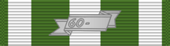

Republic of Vietnam Campaign Medal
Service awardRVN
Republic of Vietnam medal for service during the Vietnam War, March 1, 1961 to March 28, 1973.
Check your eligibility and build your ribbon rackHow you get it
You earn this by meeting the requirements. No recommendation is needed. If it's missing from your record, current members can have their MPF add it. Veterans can request it from AFPC with a Standard Form 180 and supporting documents.
You qualify if any of these apply
- Served six months in South Vietnam between March 1, 1961 and March 28, 1973
- Served outside South Vietnam and provided direct combat support to the RVN Armed Forces for an aggregate of six months (qualifying for the AFEM Vietnam or the VSM)
- Wounded by the enemy, captured and later released, or killed in action or in the line of duty, before completing six months
- Assigned in Vietnam on Jan. 28, 1973 and served at least 60 days there between Jan. 29 and March 28, 1973
Quick facts
- Category
- Foreign and international
- Type
- Service award
- WAPS points
- 0
- Position in the AFPC listing
- 88 of 91 (listed in order of precedence)
Full AFPC fact sheet text
Background
This medal is awarded to members of the armed forces of the United States who:
1. Served for six months in South Vietnam during the period March 1, 1961 to March 28, 1973.
2. Served outside the geographical limits of South Vietnam and contributed direct combat support to the RVN Armed Forces for an aggregate of six months. Only members of the armed forces of the United States who meet the criteria established for the AFEM (Vietnam) or Vietnam Service Medal during the period of service required are considered to have contributed direct combat support to the RVN Armed Forces.
3. Did not complete the length of service required in item (1) or (2) above, but who, during wartime, were:
-Wounded by the enemy (in a military action)
-Captured by the enemy during action or in the line of duty, but later rescued or released
-Killed in action or in the line of duty
4. Were assigned in Vietnam on Jan. 28, 1973, and who served a minimum of 60 calendar days in Vietnam during the period Jan. 29, 1973 to March 28, 1973.
Medal description
The medal is gold-plated with two stars, one overlaid on the other, each star composed of six points. The stars' points above are white enameled in relief with gold border. The stars' points underneath are carved in relief, gold-plated, with many small brass angles directed toward the medal's center. The inside of the frame is green with the outline of the Vietnamese country gold-plated and a red flame with three rays upright in the center. On the reverse are the words “Vietnam Campaign Medal.”
Ribbon description
The ribbon is edged with green stripes, and alternate green and white stripes with a white center.
Authorized device
A rectangular, silver-plated medal device on the suspension ribbon denotes the period of war (for example 1960 - ). A similar but smaller device with the last two digits of the inclusive years of the war, 60 -, is worn on the ribbon bar.
Source: Republic of Vietnam Campaign Medal fact sheet, Air Force's Personnel Center